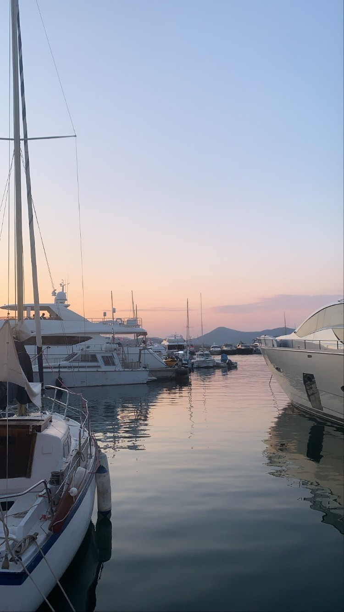
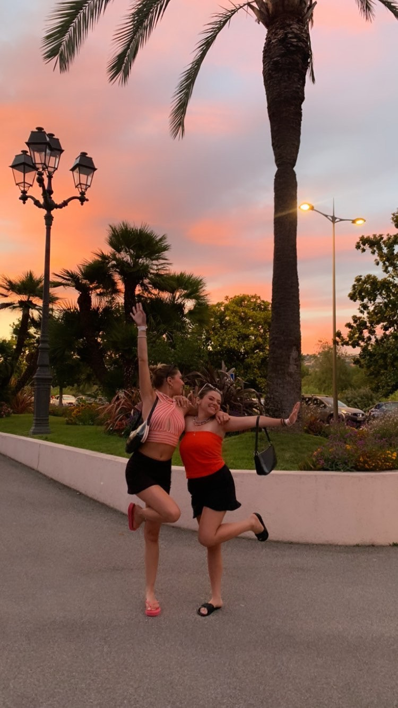
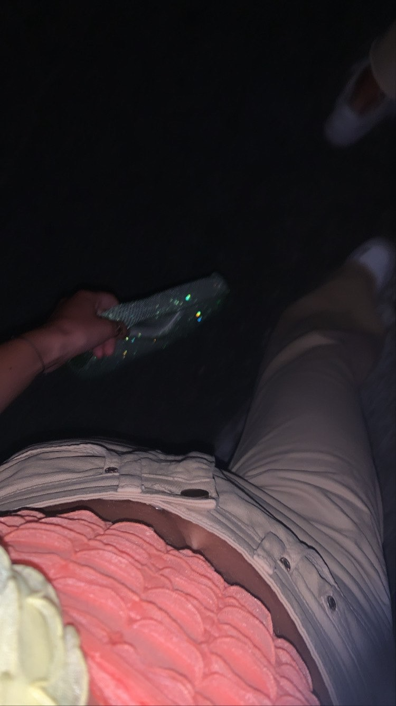

Let's start the introductions! My name is Ilana, I am 20 years old and I live in the 94. I am currently in my first year of business school at EMLV📚. Those close to me describe me as a perfectionist, generous and very jovial person😄.
Mon InstagramFor a few months now, I have discovered a very special interest in photography. I love to walk around all the cities I visit and try to take beautiful pictures of landscapes, whether it's from a different angle, with a different light... I really enjoy it! (my favourite things: the sunsets🌆 and the architecture of Paris🗼)
My friends are the rhythm of my daily life. I can't go a week without seeing them... they are so important to me! They make me think about something other than school, make me laugh, make me de-stress... I have a really good time with them. When we see each other, we can do a lot of different activities like going for a walk in Paris⛲, shopping🛍️, having a drink🥤, going to a restaurant🍣 or having a party🎉...
Fashion has always been a big part of my life since I was little. I've always been drawn to it, to want to dress well, to always pay attention to my style... I enjoy buying new clothes and creating new outfits. When I like the way I'm dressed and I stand out from the crowd, it makes me feel even more confident. I've also started a collection of trendy sneakers that I love😍!
